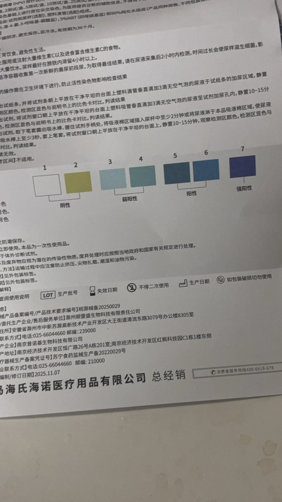
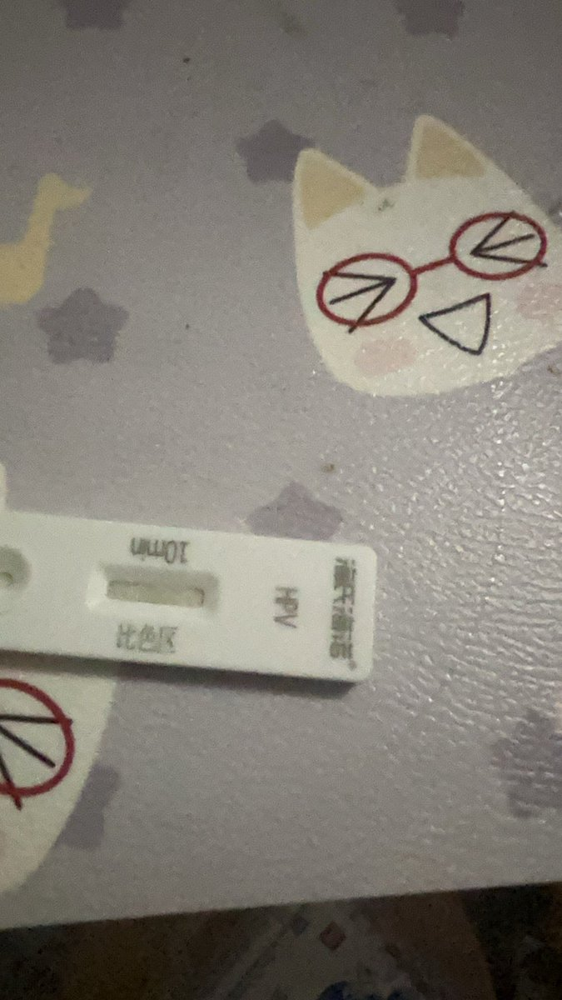

x-square「公子」様
@xx1012000456
@In2dTt HPV不是很常见的吗😅从寻常疣、跖疣、扁平疣什么的😅除非她是尖锐湿疣不然没啥啊


電子狸貓水tanuki👾
@In2dTt
我和knk切割了 隐瞒hpv导致身边多为朋友受影响 和她有过伤口接触的朋友如果看到最好也自测一下吧 下面这张图是我的结果请放心 我这个账号以后不用了我注销不掉 最后一次发推了我开放一下锁推是想让不知情的和她接触过的人都小心一些 https://t.co/1CLk7cm0H8